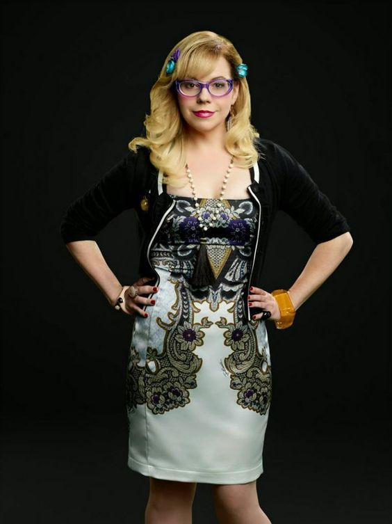

CRIMINAL MINDS
Main Character
Full name
Penelope Garcia
Birthday
1977
Job and Rank
BAU Special Agent
Communications Director
Specialty
technical analyst
Status
Alive
Portrayed by
Kristen Vangsness
First Appearance
S01E01: Extreme Aggressor
Last Appearance
S15E324: And In The End...
Penelope Garcia
Garcia is the comedic relief and she does a fine job at it. She was born
California and her parents died in a car accident when she was in her teens. Due to
her parents death she busied herself with learning how to hack and the FBI
recruited her when she hacked into their data base.
Garcia is extremely bubbly, fun and colourful. A drastic change from her days prior
to the FBI when she went through a severe depressive goth phase. Garcia holds the team
together and they know they can rely on her whenever and wherever. She is a highly
loved team member. She always tries to stay positive even after all the horrible things she
witnesses. Too help grieving families she volunteers at a counselling organisation and helps
families through difficult times.
Garcia had the perfect goodbye as she accepts a job offer at an independent
institution. She is able to get away from the horrors of working for the FBI. In the end
her collegue Luke asks her out which she happily agrees to. And i'm super glad that Garcia
got the happily ever after the deserves.